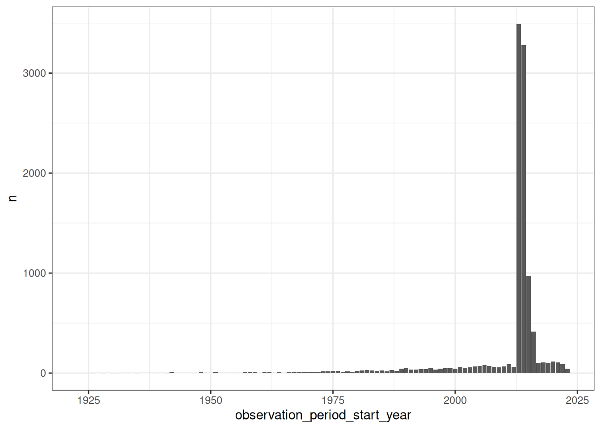

library(dplyr)
library(omock)
library(ggplot2)
library(clock)
library(omopgenerics) # TODO https://github.com/OHDSI/omock/issues/189 6 Exploring the OMOP CDM
For this chapter, we’ll use a synthetic COVID-19 dataset ("synthea-covid19-10k"). A characterisation of this dataset can be found here.
You can download the dataset using the function downloadMockDataset():
downloadMockDataset(datasetName = "synthea-covid19-10k")
NoteSetup OMOP_DATA_FOLDER
The downloadMockDataset function checks if the database has already been downloaded and if it is not is downloaded in a temporary directory. To avoid downloading the database every time that we want to use we need to set up the OMOP_DATA_FOLDER. To do that you need to create an environment variable named OMOP_DATA_FOLDER, you can add it in the r environment file (usethis::edit_r_environ()) or using Sys.setenv(OMOP_DATA_FOLDER = "...") either way OMOP_DATA_FOLDER should point to a folder where the dataset will be downloaded. This way the dataset will be stored permanently in your computer and you will not have to download it every time that you want to use it.
Note this folder is defined by omopgenerics and used also by other packages to store OMOP related data.
Once the dataset is downloaded you can create the cdm reference:
cdm <- mockCdmFromDataset(datasetName = "synthea-covid19-10k", source = "duckdb")cdm── # OMOP CDM reference (duckdb) of synthea-covid19-10k ────────────────────────• omop tables: attribute_definition, care_site, cdm_source, cohort_definition,
concept, concept_ancestor, concept_class, concept_relationship,
concept_synonym, condition_era, condition_occurrence, cost, death,
device_exposure, domain, dose_era, drug_era, drug_exposure, drug_strength,
fact_relationship, location, measurement, metadata, note, note_nlp,
observation, observation_period, payer_plan_period, person,
procedure_occurrence, provider, relationship, source_to_concept_map, specimen,
visit_detail, visit_occurrence, vocabulary• cohort tables: -• achilles tables: -• other tables: -
Note
mockCdmFromDataset()
Note that if you call the function without downloading the database first you will be prompted to download it (or it will be downloaded directly if the session is not interactive).
By default the mock cdm returns a local data set that can be inserted in any source of interest using the insertCdmTo() function. Populating source with source = "duckdb" will return you an in memory DuckDB cdm_reference with two schemas cdmSchema = “main” and writeSchema = “results”.
6.1 Counting people
The OMOP CDM is person-centric, with the person table containing records to uniquely identify each person in the database. As each row refers to a unique person, we can quickly get a count of the number of individuals in the database like so
cdm$person |>
count()# Source: SQL [?? x 1]
# Database: DuckDB 1.4.0 [unknown@Linux 6.11.0-1018-azure:R 4.4.1//tmp/RtmpIF1AVj/file306f104c2f18.duckdb]
n
<dbl>
1 10754The person table also contains some demographic information, including a gender concept for each person. We can get a count grouped by this variable, but as this uses a concept we’ll also need to join to the concept table to get the corresponding concept name for each concept id.
cdm$person |>
group_by(gender_concept_id) |>
count() |>
left_join(cdm$concept, by = c("gender_concept_id" = "concept_id")) |>
select("gender_concept_id", "concept_name", "n") |>
collect()# A tibble: 2 × 3
# Groups: gender_concept_id [2]
gender_concept_id concept_name n
<int> <chr> <dbl>
1 8532 FEMALE 5165
2 8507 MALE 5589
TipVocabulary tables
Above we’ve got counts by specific concept IDs recorded in the condition occurrence table. What these IDs represent is described in the concept table. Here we have the name associated with the concept, along with other information such as its domain and vocabulary id.
cdm$concept |>
glimpse()Rows: ??
Columns: 10
Database: DuckDB 1.4.0 [unknown@Linux 6.11.0-1018-azure:R 4.4.1//tmp/RtmpIF1AVj/file306f104c2f18.duckdb]
$ concept_id <int> 45756805, 45756804, 45756803, 45756802, 45756801, 457…
$ concept_name <chr> "Pediatric Cardiology", "Pediatric Anesthesiology", "…
$ domain_id <chr> "Provider", "Provider", "Provider", "Provider", "Prov…
$ vocabulary_id <chr> "ABMS", "ABMS", "ABMS", "ABMS", "ABMS", "ABMS", "ABMS…
$ concept_class_id <chr> "Physician Specialty", "Physician Specialty", "Physic…
$ standard_concept <chr> "S", "S", "S", "S", "S", "S", "S", "S", "S", "S", "S"…
$ concept_code <chr> "OMOP4821938", "OMOP4821939", "OMOP4821940", "OMOP482…
$ valid_start_date <date> 1970-01-01, 1970-01-01, 1970-01-01, 1970-01-01, 1970…
$ valid_end_date <date> 2099-12-31, 2099-12-31, 2099-12-31, 2099-12-31, 2099…
$ invalid_reason <chr> NA, NA, NA, NA, NA, NA, NA, NA, NA, NA, NA, NA, NA, N…Other vocabulary tables capture other information about concepts, such as the direct relationships between concepts (the concept relationship table) and hierarchical relationships between (the concept ancestor table).
cdm$concept_relationship |>
glimpse()Rows: ??
Columns: 6
Database: DuckDB 1.4.0 [unknown@Linux 6.11.0-1018-azure:R 4.4.1//tmp/RtmpIF1AVj/file306f104c2f18.duckdb]
$ concept_id_1 <int> 35804314, 35804314, 35804314, 35804327, 35804327, 358…
$ concept_id_2 <int> 912065, 42542145, 42542145, 35803584, 42542145, 42542…
$ relationship_id <chr> "Has modality", "Has accepted use", "Is current in", …
$ valid_start_date <date> 2021-01-26, 2019-08-29, 2019-08-29, 2019-05-27, 2019…
$ valid_end_date <date> 2099-12-31, 2099-12-31, 2099-12-31, 2099-12-31, 2099…
$ invalid_reason <chr> NA, NA, NA, NA, NA, NA, NA, NA, NA, NA, NA, NA, NA, N…cdm$concept_ancestor |>
glimpse()Rows: ??
Columns: 4
Database: DuckDB 1.4.0 [unknown@Linux 6.11.0-1018-azure:R 4.4.1//tmp/RtmpIF1AVj/file306f104c2f18.duckdb]
$ ancestor_concept_id <int> 375415, 727760, 735979, 438112, 529411, 14196…
$ descendant_concept_id <int> 4335743, 2056453, 41070383, 36566114, 4326940…
$ min_levels_of_separation <int> 4, 1, 3, 2, 3, 3, 4, 3, 2, 5, 1, 3, 4, 2, 2, …
$ max_levels_of_separation <int> 4, 1, 5, 3, 3, 6, 12, 3, 2, 10, 1, 3, 4, 2, 2…More information on the vocabulary tables (as well as other tables in the OMOP CDM version 5.3) can be found at https://ohdsi.github.io/CommonDataModel/cdm53.html#Vocabulary_Tables.
6.2 Summarising observation periods
The observation period table contains records indicating spans of time over which clinical events can be reliably observed for the people in the person table. Someone can potentially have multiple observation periods. So say we wanted a count of people grouped by the year during which their first observation period started. We could do this like so:
first_observation_period <- cdm$observation_period |>
group_by(person_id) |>
arrange(observation_period_start_date) |>
filter(row_number() == 1) |>
compute()
first_records_per_year <- cdm$person |>
left_join(first_observation_period, by = "person_id") |>
mutate(observation_period_start_year = get_year(observation_period_start_date)) |>
group_by(observation_period_start_year) |>
count() |>
collect()
ggplot(first_records_per_year) +
geom_col(mapping = aes(x = observation_period_start_year, y = n)) +
theme_bw()
6.3 Summarising clinical records
What’s the number of condition occurrence records per person in the database? We can find this out like so
number_condition_occurrence_records <- cdm$person |>
left_join(
cdm$condition_occurrence |>
group_by(person_id) |>
count(name = "condition_occurrence_records"),
by="person_id"
) |>
mutate(condition_occurrence_records = coalesce(condition_occurrence_records, 0)) |>
group_by(condition_occurrence_records) |>
count() |>
collect()
ggplot(number_condition_occurrence_records) +
geom_col(mapping = aes(x = condition_occurrence_records, y = n)) +
theme_bw()
How about we were interested in getting record counts for some specific concepts related to Covid-19 symptoms?
symptoms_records <- cdm$condition_occurrence |>
filter(condition_concept_id %in% c(437663, 437390, 31967, 4289517, 4223659,
312437, 434490, 254761, 77074)) |>
group_by(condition_concept_id) |>
count() |>
left_join(cdm$concept, by = c("condition_concept_id" = "concept_id")) |>
collect()
ggplot(symptoms_records) +
geom_col(mapping = aes(x = concept_name, y = n)) +
theme_bw()+
xlab("")
We can also use summarise for various other calculations
cdm$person |>
summarise(min_year_of_birth = min(year_of_birth, na.rm=TRUE),
q05_year_of_birth = quantile(year_of_birth, 0.05, na.rm=TRUE),
mean_year_of_birth = round(mean(year_of_birth, na.rm=TRUE),0),
median_year_of_birth = median(year_of_birth, na.rm=TRUE),
q95_year_of_birth = quantile(year_of_birth, 0.95, na.rm=TRUE),
max_year_of_birth = max(year_of_birth, na.rm=TRUE)) |>
glimpse()Rows: ??
Columns: 6
Database: DuckDB 1.4.0 [unknown@Linux 6.11.0-1018-azure:R 4.4.1//tmp/RtmpIF1AVj/file306f104c2f18.duckdb]
$ min_year_of_birth <int> 1923
$ q05_year_of_birth <dbl> 1927
$ mean_year_of_birth <dbl> 1971
$ median_year_of_birth <dbl> 1970
$ q95_year_of_birth <dbl> 2018
$ max_year_of_birth <int> 2023As we’ve seen before, we can also quickly get results for various groupings or restrictions
grouped_summary <- cdm$person |>
group_by(gender_concept_id) |>
summarise(min_year_of_birth = min(year_of_birth, na.rm=TRUE),
q25_year_of_birth = quantile(year_of_birth, 0.25, na.rm=TRUE),
median_year_of_birth = median(year_of_birth, na.rm=TRUE),
q75_year_of_birth = quantile(year_of_birth, 0.75, na.rm=TRUE),
max_year_of_birth = max(year_of_birth, na.rm=TRUE)) |>
left_join(cdm$concept, by = c("gender_concept_id" = "concept_id")) |>
collect()
grouped_summary |>
ggplot(mapping = aes(x = concept_name, group = concept_name, fill = concept_name)) +
geom_boxplot(mapping = aes(
lower = q25_year_of_birth,
upper = q75_year_of_birth,
middle = median_year_of_birth,
ymin = min_year_of_birth,
ymax = max_year_of_birth),
stat = "identity", width = 0.5) +
theme_bw()+
theme(legend.position = "none") +
xlab("")
6.4 Disconnecting
Once we have finished our analysis we can close our connection to the database behind our cdm reference.
cdmDisconnect(cdm)